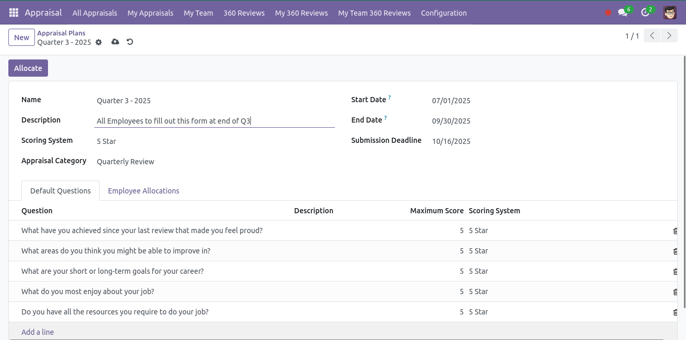
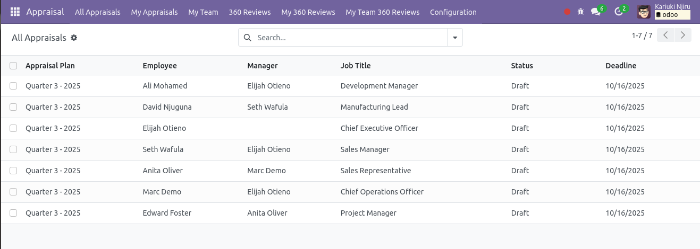
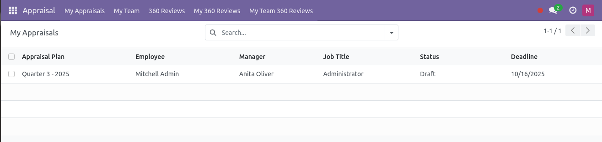
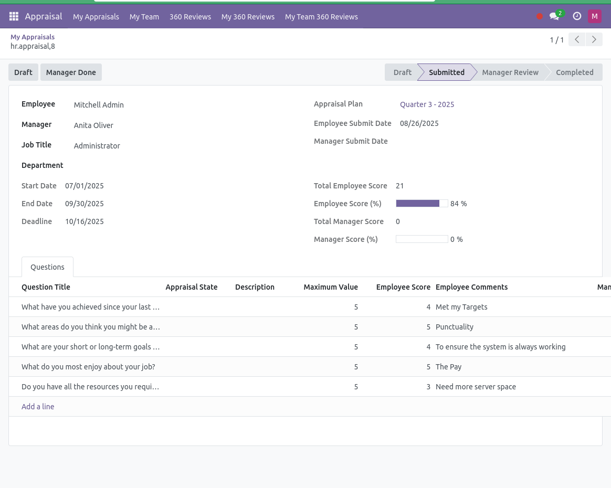
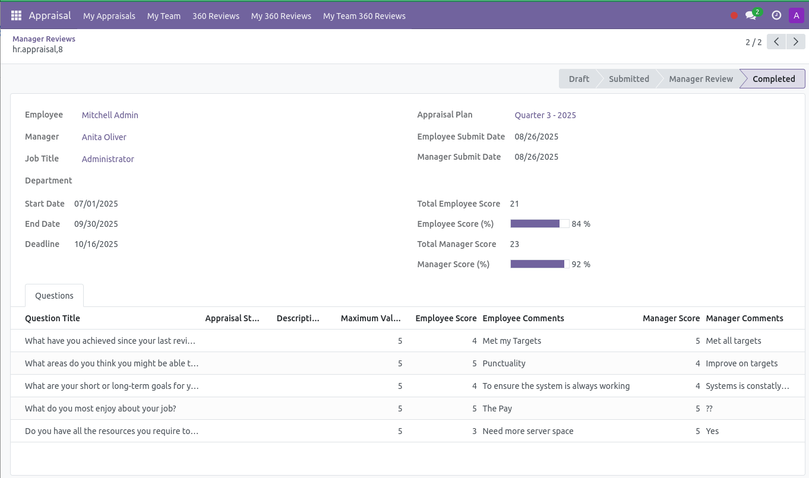
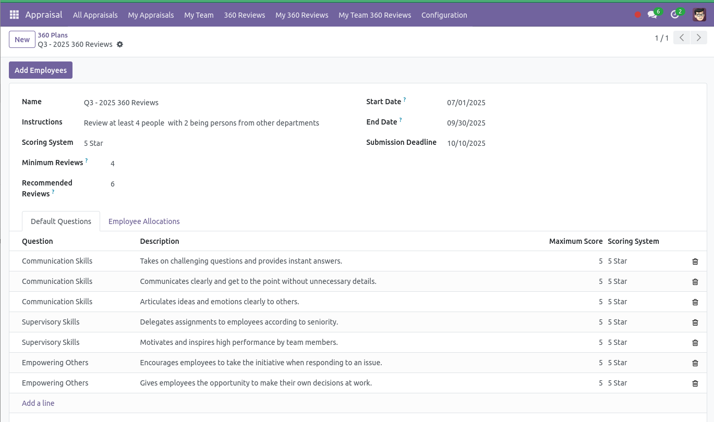
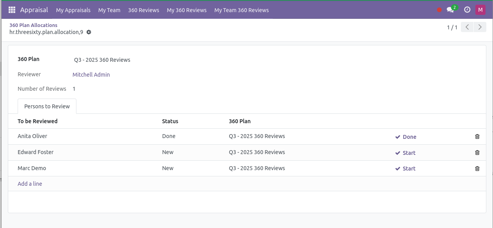
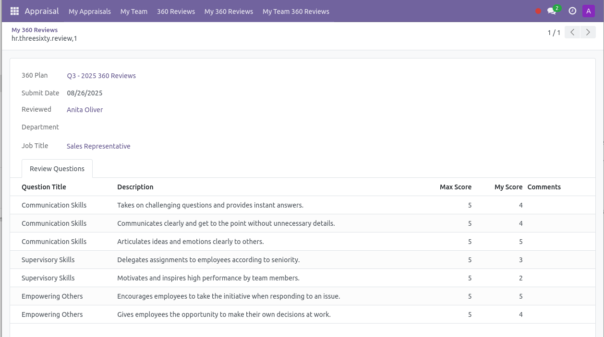

This module assists HR departments in conducting appraisals and 360-degree reviews. It provides features that allow managers to add items to appraisals as well as enable employees to conduct multiple 360-degree reviews.
HR can assign default questions for every appraisal and define the employees who should fill them.
HR can see all created appraisals and their current status.
Employees can view all appraisals assigned to them.

Managers can see appraisals assigned to employees under their supervision. The manager can at this stage add their comments. Once the appraisal is marked as completed, it cant be altered.
HR can assign default questions, offer instructions, and define employees involved in 360-degree reviews.
Employees can see assigned 360 reviews and add peers to review based on provided instructions.
Employees can see reviews that they have received from peers.
Managers can view 360 reviews received by employees in their team.